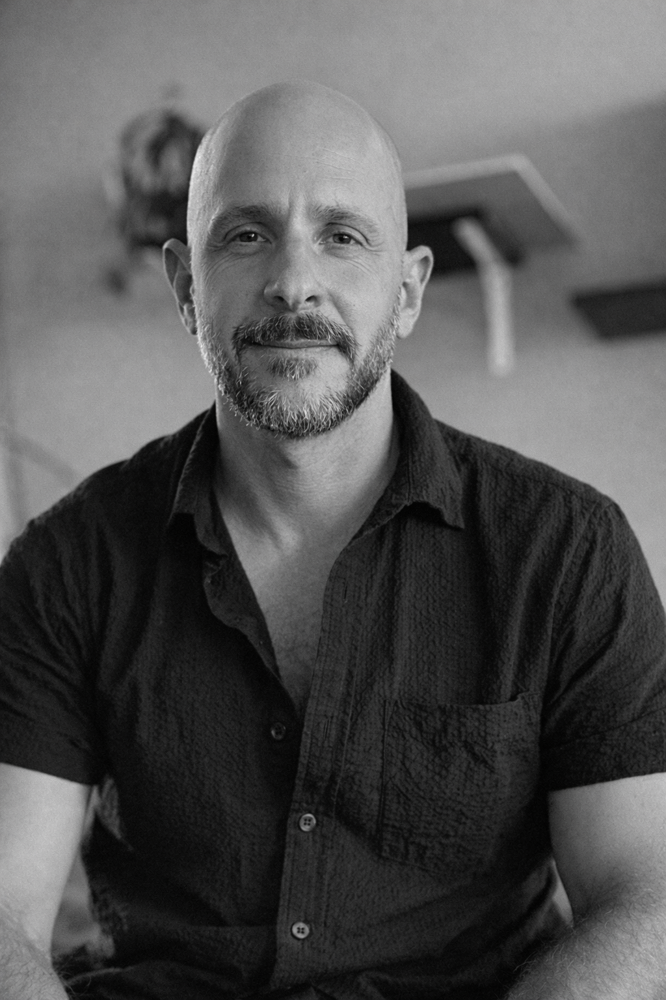

John Finnell, LAc
Acupuncture & holistic medicine for nervous system regulation, hormones, digestion, and stress-related conditions — steady, calm, and collaborative.
Book a consult
What I Work With
Most people I work with don’t have just one issue — they have patterns. Stress, hormones, digestion, sleep, and energy are part of the same system, and symptoms tend to show up where the system is under the most strain.
These symptoms are often connected. My role is to help identify patterns beneath them and support your body’s ability to regulate over time — at a pace your system can handle.
- Chronic stress and nervous system dysregulation
- Hormonal and thyroid-related symptoms
- Digestive and metabolic issues
- Fatigue, burnout, and persistent tension

How I Work
My work is grounded, methodical, and individualized. I take time to listen, assess patterns, and adjust based on real response — not protocols alone.
This favors consistency over intensity. Small, well-timed inputs create stability — and stability is what allows deeper healing without pushing your system.
Whether in person or remotely, the process is collaborative and paced. We’re not chasing symptoms. We’re restoring function.
1. Start
A short intake + conversation to understand what’s happening, what you’ve tried, and what your body is signaling.
2. Plan
A focused plan that may include acupuncture, herbal support, nutrition strategy, and lifestyle levers that actually move the needle.
3. Adjust
We track response and refine. The goal is stability, resilience, and a system that can handle real life again.
Testimonials
About
I’m a licensed acupuncturist with years of experience working with complex, stress-related health patterns.
My approach blends Eastern medicine with a clear, systems-based understanding of the body. I value clarity, steadiness, and meeting people where they are.
Outside the clinic, I value movement, creativity, and time offline.
Contact
Text to book: 951-638-3932
Email: wellness@johnfinnell.com